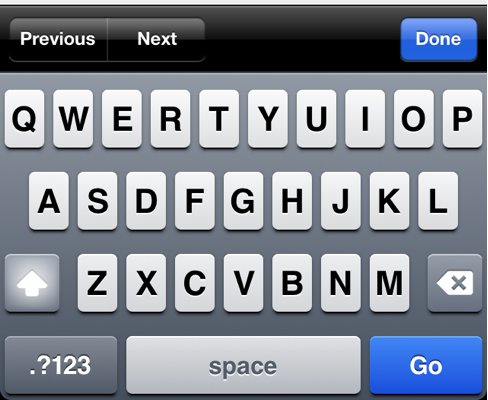
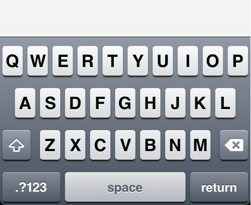

The keyboard in an iOS web view has an InputAccessoryView with Previous, Next and Done buttons.

This plugin allows the toolbar to be hidden.

Include the Javascript after cordova.js and before your application’s javascript file
<script type="text/javascript" src="keyboard_toolbar_remover.js"></script>
In your Javascript, include the module
var toolbar = cordova.require('cordova/plugin/keyboard_toolbar_remover);
To disable the toolbar
toolbar.hide()
To re-enable the toolbar
toolbar.show()
The pluginstall tool will automatically install Cordova plugins that confirm to the cordova-plugin-spec.
Install pluginstall using npm (requires Node.js)
npm install -g pluginstall
Install the plugin
pluginstall ios /path/to/project /path/to/plugin
Copy KeyboardToolbarRemover.h and KeyboardToolbarRemover.m to the plugins directory of your iOS project.
Copy keyboard_toolbar_remover.js to the www directory of your project.
Edit Cordova.plist. Add an entry under the plugin section mapping KeyboardToolbarRemover to KeyboardToolbarRemover.